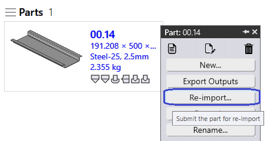

加工检查
Re-import
-
右键单击任何零件，然后单击 Re-import…
-
所有选定的零件加工实例[所有机床]要么自动加工，要么手动编辑加工，输出文件首先被删除。[CAD，折弯和切割输出]
-
零件再次通过CAD验证导入，为所有机床提供加工实例。
-
根据零件加工结果，创建输出文件。
-
 == Re-tool * 右键单击任何零件，然后单击 Re-tool… - 所有机床被选中，所有机床按激光、冲裁、面板和折弯机分组。 - 单击确定→自动加工或手动编辑*选定的*加工实例与输出位置文件[折弯和切割输出]一起删除。 - 保留现有输出：
-
选断：针对_折弯和切割输出_所选机床加工实例的所有选定零件首先被移除。根据再加工结果，输出文件被导出。
-
选中：而不是删除零件的所有输出。在批次中，前几个设置零件集合，_折弯和切割输出_被移除并重新加工这些零件。

|
重新加工的使用
====
- 更改一台或两台机床的CAM设置，然后我们可以选择这些机床和重新加工。
- 假设LTT或冲裁模具丢失或折弯模具丢失，然后更新机床。仅对这些机床的这些零件进行重新加工。
====
== 忽略错误
|
-
假设一个加工实例有警告，可以通过单击Ignore Errors用自动加工的结果进行覆盖 . -单击Ignore Errors将导出相应的输出。

-
假设折弯模具丢失或任何CAM设置发生变化，则无需重新加工这些折弯加工实例。
-
使用*检查加工*，这将单独进行加工验证。
-
如果加工验证失败，则该加工实例的状态会发生变化。同样，输出文件将根据状态删除。
-
检查加工将通过*忽略错误*手动标记覆盖错误，并将零件标记为错误状态。
-

-
假设特定机床停机或特定零件无法在那台机床上加工，可使用选项 Suppress Tooling 避免针对此机床准备此零件排样。
-
在隐藏加工后，将鼠标放在加工实例上将显示_加工被<用户名>在<日期时间>隐藏_。
-
隐藏加工将删除相应的输出文件。
-
-
*Unsuppress Tooling*将加工状态返回到隐藏状态。同时相应的输出文件将再次导出。